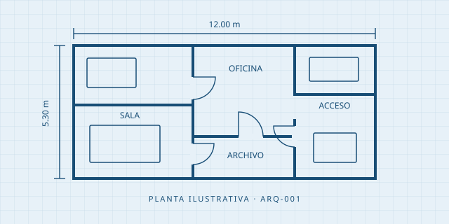

Inventario de planos
Busca por código, título o categoría. Consulta unidades totales, disponibles y estado del plano.
GESTIÓN DE PLANOS · INGENIERÍA
Organiza el archivo físico de tu oficina de ingeniería. Consulta existencias, registra préstamos y devoluciones y conserva la trazabilidad de cada operación.

FUNCIONALIDADES
Busca por código, título o categoría. Consulta unidades totales, disponibles y estado del plano.
Identifica a los responsables de los préstamos y administra sus datos y estado.
Registra entregas y devoluciones con actualización de existencias.
Consulta préstamos abiertos, cerrados y vencidos para dar seguimiento a cada operación.
Conserva los datos originales del plano en cada préstamo, incluso cuando cambia el catálogo.
Consulta la demanda histórica de planos a partir de los préstamos registrados.
FLUJO DE TRABAJO
Consulta el catálogo y verifica las unidades disponibles.
Comprueba su estado y las condiciones de préstamo.
Asocia una unidad al responsable y registra el vencimiento.
Restituye la unidad y conserva el historial.
INTEGRIDAD OPERATIVA
Diseñado para mantener la disponibilidad y el historial consistentes, incluso cuando varios operadores trabajan al mismo tiempo.
Hasta tres préstamos abiertos, con un plazo de seis días por operación.
No puede recibir nuevos préstamos hasta devolver los vencidos.
Si dos operadores intentan prestarla simultáneamente, solo uno puede completar la operación; el otro recibe un conflicto.
No. Los préstamos y devoluciones se conservan. Los planos se desactivan de forma lógica y los datos históricos permanecen.
ACCESO A LA APLICACIÓN
Accede al sistema desde el entorno local cuando la aplicación esté en ejecución.
Abrir aplicación localRequiere que el servicio React de Plans Archive esté iniciado.